Pertanyaan yang Sering Ditanyakan (FAQ/Frequently Asked
Question) Seputar PPDB SMKN 2 Pati Tahun 2020/2021
Download
FAQ/tanya-jawab ini dalam bentuk dokumen klik link berikut: https://widiopranoto.github.io/FAQ_PPDB/FAQ_PPDB.pdf
Download
brosur dalam bentuk PDF bisa klik ini: https://bit.ly/BrosurPPDBSMKN2Pati
Download
pakta integritas klik ini: http://bit.ly/PaktaIntegritasPPDB
Video
tutorial PPDB SMKN 2 Pati: https://www.youtube.com/watch?v=ydEWZ0Es9kQ
Video
live streaming tanya jawab PPDB SMKN 2 Pati:
Segmen
1: https://www.youtube.com/watch?v=hJMvT5cptcw
Segmen
2: https://www.youtube.com/watch?v=vPx07tflsMw
Segmen
3: https://www.youtube.com/watch?v=eX8jmdqxHsg
Bagi
yang punya kesulitan pendaftaran online, silakan bertanya melalui WA:
1.
Pak Joko Purnomo��� :
081575666872
2. Pak Widio Pranoto���� : 085640704046
3.
Pak Djoko Suwarto��� :
081390031269
Daftar Pertanyaan (klik
untuk melihat jawaban)
1.
Apa saja kompetensi/jurusan, daya
tampung, dan lama belajar di SMK Negeri 2 Pati?
2. Ada
berapa jalur pendaftaran PPDB?
3. Apa
yang harus saya persiapkan untuk pendaftaran online PPDB SMKN 2 Pati?
4. Kapan
pendaftaran online dibuka?
5. Bisakah
saya datang langsung ke SMKN 2 Pati untuk mendaftar langsung?
6. Jika
saya mengalami kesulitan melakukan pendaftaran online, bisakah pihak SMKN 2
Pati membantu?
7. Ada
berapa tahap pendaftaran online?
8. Bagaimana
cara untuk ajuan akun/registrasi akun?
9. Bagaimana
cara aktivasi akun (pemilihan sekolah dan jurusan)?
13. Bagaimana
cara pindah dari SMK ke SMA jika sudah terlanjur memilih jurusan/kompetensi di
SMK?
14. Bagaimana
cara mengecek di mana saya diterima?
15. Kapan
daftar ulang di SMKN 2 Pati?
16. Apa
saja yang harus dipersiapkan dan dibawa saat daftar ulang?
17. Bagaimana
kriteria pendaftar yang langsung diterima melalui jalur prestasi?
18. Apa
saja jenis lomba/kejuaraan yang diperhitungkan?
19. Bagaimana
penghitungan Nilai Akhir (NA)?
20. Apakah
saya perlu melampirkan surat keterangan sehat dari dokter?
21. Bagaimana
jika saya belum cetak token saat ajuan akun?
22. Bagaimana
jika KK atau NIK saya dinyatakan belum tinggal selama setahun atau lebih di
Jawa Tengah?
24. Bagaimana
cara membatalkan pendaftaran?
Apa
saja kompetensi/jurusan, daya tampung, dan lama belajar di SMK Negeri 2 Pati?
Jawab:
|
No. |
Kompetensi |
Nama Populer |
Daya Tampung |
Lama Studi |
|
1 |
Desain,
Pemodelan dan Informasi Bangunan (DPIB) |
Bangunan |
108 |
3
tahun |
|
2 |
Teknik
Audio Video (TAV) |
Elektronika |
108 |
3
tahun |
|
3 |
Teknik
Otomasi Industri (TOI) |
Listrik |
108 |
4
tahun |
|
4 |
Teknik
Pemesinan (TP) |
Mesin |
108 |
3
tahun |
|
5 |
Teknik
Kendaraan Ringan (TKR) |
Otomotif |
108 |
3
tahun |
|
6 |
Multimedia
(MM) |
Multimedia |
108 |
3
tahun |
Ada berapa
jalur pendaftaran PPDB?
Jawab:
Ada 2 jalur, yaitu:
1.
Jalur afirmasi:
�
Untuk anak tenaga kesehatan penanganan Covid-19.
�
Siswa miskin yang dibuktikan KIP/PKH atau surat keterangan
Pemda (SKTM tidak berlaku).
Besar
kuota untuk ketiga jenis siswa tersebut secara keseluruhan maksimal 20% dari
daya tampung.
2. Jalur prestasi:
untuk calon peserta didik yang berprestasi di bidang akademis atau non
akademis. Calon peserta didik yang tidak punya prestasi menonjol juga masuk
jalur ini.
Apa yang
harus saya persiapkan untuk pendaftaran online PPDB SMKN 2 Pati?
Jawab:
1. Pakta
integritas/surat pernyataan integritas yang jadi satu dengan surat pernyataan
kesehatan. Bisa diunduh dari https://ppdb.jatengprov.go.id/. Bisa dicetak/diprint atau tulis
tangan, dibubuhi materai Rp. 6000 dan ditandatangani menyentuh sedikit di atas
materai. Pakta integritas/surat pernyataan integritas ini kemudian
discan/difoto, file disimpan di HP/flashdisk. Besar file tidak boleh lebih dari
1 MB.
2. Surat keterangan
rapor dari SMP yang discan/difoto, file disimpan di HP/flashdisk. Surat
keterangan rapor memuat nilai rata-rata semester 1-5 untuk Bahasa Indonesia,
matematika, Bahasa Inggris, dan IPA. Besar file tidak boleh lebih dari 1 MB.
3. Persiapkan dan
catat NISN (Nomor Induk Siswa Nasional).
4. Persiapkan dan
catat nomor KK (Kartu Keluarga). Jika tidak punya KK atau KK beralamat luar
provinsi Jawa Tengah, persiapkan SKD (Surat Keterangan Domisili) minimal dari
RT/RW atau instansi berwenang.
5. Persiapkan dan
catat nomor HP orang tua.
6. Persiapkan email
untuk antisipasi jika lupa password PPDB nantinya. Buka email terlebih dulu
untuk memastikan email masih aktif.
7. Untuk jalur
prestasi: jika ada prestasi/juara, piagam kejuaraan discan/difoto, file
disimpan di HP/flashdisk. Besar file tidak boleh lebih dari 1 MB. Jika tidak
punya prestasi menonjol, tidak perlu scan piagam juara.
8. Untuk jalur
afirmasi:
a.
Untuk anak tenaga kesehatan penanganan Covid-19: siapkan
nomor surat tugas/surat tugas orang tua untuk penanganan Covid-19. Surat tugas
discan/difoto, file disimpan di HP/flashdisk. Besar file tidak boleh lebih dari
1 MB.
b.
Untuk anak miskin: siapkan nomor surat KIP/PKH/surat
keterangan Pemda; surat/kartu discan/difoto, file disimpan di HP/flashdisk.
Besar file tidak boleh lebih dari 1 MB.
Kapan
pendaftaran online dibuka?
Jawab:
Pendaftaran online dibuka
Rabu, 17 Juni 2020 jam 08.00 WIB � Jum�at, 25 Juni 2020 jam 16.00 WIB.
Bisakah saya
datang langsung ke SMKN 2 Pati untuk mendaftar langsung?
Jawab:
Semua pendaftaran HARUS
online. Tidak ada pendaftaran langsung.
Jika saya
mengalami kesulitan melakukan pendaftaran online, bisakah pihak SMKN 2 Pati
membantu?
Jawab:
Jika ada kesulitan dalam
pendaftaran, pendaftar bisa bertanya melalui WA (WhatsApp) berikut:
4.
Pak Joko Purnomo��� :
081575666872
5. Pak Widio Pranoto���� : 085640704046
6.
Pak Djoko Suwarto��� :
081390031269
Apabila
pendaftar tetap mengalami kesulitan, pendaftar bisa datang langsung ke posko
pengaduan dan layanan masyarakat di SMKN 2 Pati.
Ada
berapa tahap pendaftaran online?
Jawab:
Tahapannya
adalah:
1. Ajuan akun/registrasi
akun
2. Aktivasi akun
(pemilihan sekolah dan jurusan)
3. Perbaikan data
(jika ada data yang salah)
-
Perbaikan data
-
Perbaikan pilihan sekolah/jurusan
-
Pindah jenjang (SMA ke SMK atau SMK ke SMA)
4. Pengecekan secara
berkala untuk memantau perkembangan posisi pendaftar
5. Daftar ulang
Bagaimana
cara untuk ajuan akun/registrasi akun?
Jawab:
Prosedurnya
adalah:
1.
Dengan PC/laptop/HP yang terkoneksi internet, gunakan
Chrome/browser yang ada, masuk website https://ppdb.jatengprov.go.id/ lalu klik 'x' pada pemberitahuan
download template pakta integritas. Pada bagian PPDB SMK, klik 'Ajuan Akun'.
|
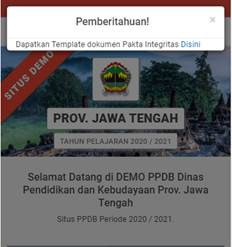 |
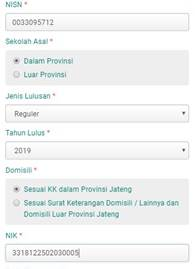 |
2.
Isikan NISN, Sekolah Asal, Jenis Lulusan, Tahun Lulus,
Domisili, NIK, dan Kode Keamanan dan klik 'Lanjutkan'.
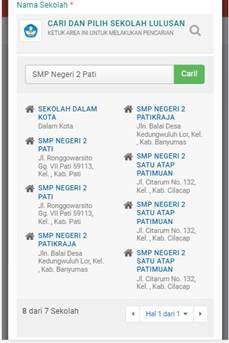
3.
Isikan:
� Nama Asal Sekolah
(caranya: klik tanda kaca pembesar, isi nama SMP (misal: SMP Negeri 4 Pati)
lalu klik 'Cari', kemudian klik nama SMP yang dicari di bawahnya)
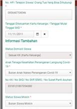
� Status Domisili
(Dalam Provinsi/Luar Provinsi) (terisi otomatis)
� No HP orang tua
� Tanggal
Cetak/Dikeluarkannya KK atau Surat Ket. Domisili (caranya: klik di simbol
kalender lalu pilih tanggal keluarnya KK atau Surat Ket Domisili)
� Status Domisili
Siswa (Sesuai KK/Tidak Sesuai KK) (terisi otomatis)
� Anak Tenaga
Kesehatan Covid-19 --> HARUS DIKLK DAN DIPILIH SALAH SATU, PILIH BUKAN ANAK
NAKES KALAU BUKAN ANAK TENAGA KESEHATAN
� No
KK/SKD/SKP/Emis/Surat Keterangan Panti Asuhan (terisi otomatis)
� Status Siswa Miskin(Siswa Miskin atau Bukan Siswa Miskin) --> HARUS
DIKLK DAN DIPILIH SALAH SATU
� Status Siswa
Pindahan (Pindahan Ortu atau Bukan Pindahan Ortu) --> HARUS DIKLK DAN
DIPILIH SALAH SATU
� Nilai Rapor Bahasa
Indonesia (Rata-rata semester 1 sampai 5) --> TANDA KOMA HARUS DITULIS TITIK
(Contoh: 6.50)
� Nilai Rapor Matematika(Rata-rata semester 1 sampai 5) --> TANDA KOMA
HARUS DITULIS TITIK (Contoh: 6.50)
� Nilai Rapor Bahasa
Inggris (Rata-rata semester 1 sampai 5) --> TANDA KOMA HARUS DITULIS TITIK
(Contoh: 6.50)
� Nilai Rapor IPA
(Rata-rata semester 1 sampai 5) --> TANDA KOMA HARUS DITULIS TITIK (Contoh:
6.50)
�
Nilai Kejuaraan --> HARUS DIKLIK, DAN PILIH PRESTASI
TERTINGGI ATAU PILIH TIDAK MEMILIKI PRESTASI KEJUARAAN
Jika
sudah benar, klik 'Lanjutkan'
|
|
|
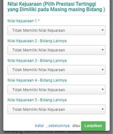 |
4.
Jika Anda sudah yakin data yang Anda isikan benar, centang
'Setuju dengan data di atas'. Klik 'Cetak bukti ajuan akun'. Simpan dalam
bentuk pdf file registrasi akun/ajuan akun di HP atau di flashdisk. File bisa
dicetak/diprint di printer (di tempat fotokopi di warnet). Catat nomor peserta
dan token. Jangan sampai hilang.
|
|
|
|
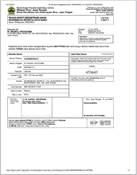 |

Bagaimana
cara aktivasi akun (pemilihan sekolah dan jurusan)?
Jawab:
Prosedurnya
adalah:
1.
Dengan PC/laptop/HP yang terkoneksi internet, gunakan
Chrome/browser yang ada, masuk website https://ppdb.jatengprov.go.id/ lalu klik 'x' pada pemberitahuan
download template pakta integritas. Pada bagian PPDB SMK, klik tulisan �Sekolah
Menengah Kejuruan (SMK)�.� Klik pada
tulisan �Prestasi� atau �Afirmasi� sesuai jalur yang ditempuh.
|
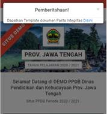 |
|
|

2.
Klik �Melakukan Aktivasi Akun� lalu klik �Aktivasi Akun�.
|
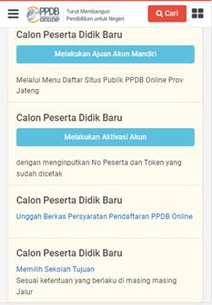 |
|
3.
Isikan:
� Nomor peserta:
diisi nomor peserta yang didapat dari cetak registrasi akun
� Token: diisi token
yang didapat dari cetak registrasi akun
� Email: diisi email
(kalau punya), kalau tidak punya email, boleh dikosongkan.
Tapi jika Anda tidak mengisi email,
maka Anda tidak boleh lupa password PPDB.
� Isikan password
yang diinginkan untuk akun. Minimal terdiri 8 karakter. Pakai kata yang mudah
diingat! Catat password Anda. JANGAN SAMPAI LUPA! Jika lupa, Anda tidak bisa
mengecek perkembangan PPDB.
Setelah selesai, klik �Aktivasi Akun�.
4. Upload scan (file
PDF) atau foto dari:
�
Pakta Integritas/Surat Pernyataan Integritas dan
Kesehatan� yang sudah diisi, diberi materai, dan ditandatangani.
�
Surat keterangan nilai rapor dari SMP.
�
Untuk jalur prestasi: jika Anda punya piagam juara, upload
piagam-piagam tersebut.
������� Jika
tidak punya, langsung klik �Kembali ke Beranda�.
�
Untuk jalur afirmasi: upload surat/kartu yang berkaitan
dengan jalur afirmasi Anda, lalu klik �Kembali ke Beranda�.
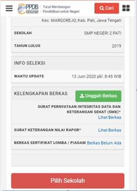
5.
Klik �Pilih Sekolah� kemudian isikan pilihan dalam obyek
Pemeriksaan Kesehatan:
� Buta warna������������� ��������� :
pilih �Tidak� jika tidak buta warna
� Gangguan
pendengaran������ : pilih �Tidak� jika
tidak punya gangguan pendengaran
� Gangguan mulut dan
gigi����� : pilih �Tidak� jika tidak punya
gangguan mulut dan gigi
Setelah
selesai, klik �Lanjutkan�.
|
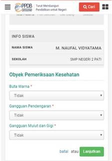 |
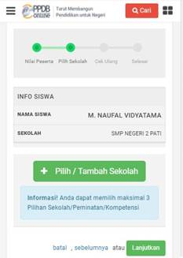 |
6.
Klik �Pilih/Tambah Sekolah�
7.
Ketikkan �SMKN 2 Pati� dalam daftar pencarian, lalu klik
�SMKN 2 Pati� jika sudah ditemukan.
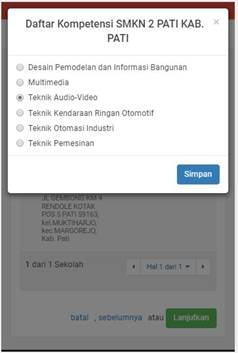
Setelah
selesai, klik �Lanjutkan�.
8.
Pilih kompetensi keahliah/jurusan yang diinginkan sebagai
pilihan 1 dan klik �Simpan�.
9.
Untuk melakukan penambahan jurusan pilihan 2 dan 3, lakukan
berulang-ulang dari langkah ke-6 (Pilih/Tambah Sekolah), hingga maksimal 3
jurusan yang berbeda dan maksimal 2 SMK yang berbeda.
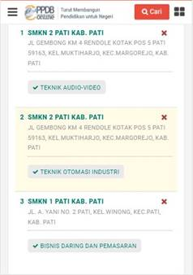
10.
Jika ingin mengubah pilihan SMK jika semua sekolah pilihan
dan jurusan pilihan sudah tercantum dalam pilihan 1, 2, dan 3, untuk menghapus
pilihan, klik �x� dan pilih sekolah dan jurusan lagi dari langkah ke-10.
11.
Setelah yakin dengan pilihan, klik �Saya setuju dengan
pernyataan di atas� dan �Lanjutkan�. Klik �Cetak Bukti Pendaftaran�. Simpan
file bukti pendaftaran di HP/flashdisk.
|
|
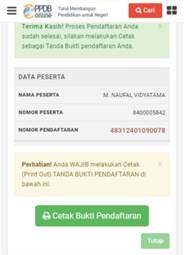 |
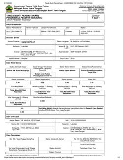 |

12.
Cetak/print bukti pendaftaran tersebut di tempat fotokopi
atau warnet, lalu tanda tangani. Bukti pendaftaran diperlukan untuk daftar
ulang.
|
|
|

jika
saya BELUM aktivasi/BELUM memilih sekolah dan jurusan?
Jawab:
Cara/prosedurnya sama
seperti ajuan akun/registrasi akun.
1. Masuk https://www.ppdb.jatengprov.go.id
2. Klik tulisan
Sekolah Menengah Kejuruan
3. Klik �Ajuan Akun�
4. Masukkan NISN, Sekolah
Asal, Jenis Lulusan, Tahun Lulus, Domisili, dan Kode Keamanan lalu klik �Lanjutkan�
5. Isikan data yang
benar (NIK/SKD, Anak Petugas Covid/bukan, Siswa Miskin/Bukan, Nilai Rapor)
6. Centang �Setuju�
dan klik �Cetak�. File nomor peserta dan token dicetak dan disimpan.
jika
saya SUDAH aktivasi/SUDAH memilih sekolah dan jurusan?
Jawab:
1.
Batalkan aktivasi/pendaftaran
2.
Logout (klik �Keluar�)
3.
Ajuan akun lagi dan edit data yang ingin diubah/diganti dan cetak bukti ajuan
akun (ada nomor peserta dan token)
4.
Aktivasi akun lagi dan cetak bukti pendaftaran yang baru (ada nomor peserta dan
pilihan jurusan)
Jawab:
Ada 2
(cara):
Cara
pertama: mengecek ranking pendaftar individual
1.
Dengan PC/laptop/HP yang terkoneksi internet, gunakan
Chrome/browser yang ada, masuk website https://ppdb.jatengprov.go.id/ lalu klik 'x' pada pemberitahuan
download template pakta integritas. Setelah itu, klik icon �Cari� dan masukkan
nomor pendaftaran dan klik icon kaca pembesar.
|
|
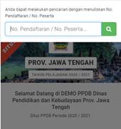 |
|
2.
Status pendaftaran dapat dilihat.
Cara
kedua: untuk melihat semua pendaftar dan rankingnya di suatu kompetensi
keahlian/jurusan:
1.
Dengan PC/laptop/HP yang terkoneksi internet, gunakan
Chrome/browser yang ada, masuk website https://ppdb.jatengprov.go.id/. Klik 'x' pada pemberitahuan download
template pakta integritas. Pada bagian PPDB SMK, klik tulisan �Sekolah Menengah
Kejuruan (SMK)�. Klik pada tulisan �Prestasi� atau �Afirmasi� sesuai jalur yang
ditempuh, klik �Memantau Hasil Seleksi�, lau klik �Pilih Sekolah�
|
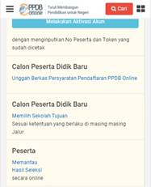 |
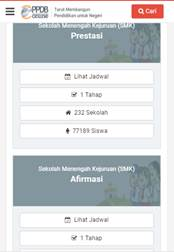 |
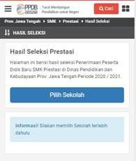 |
2.
Pada kotak pencarian isikan SMKN 2 Pati lalu klik icon
kaca pembesar, dan klik SMKN 2 Pati di bawahnya.
|
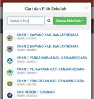 |
|
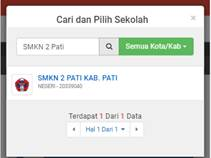 |
3.
Klik pilihan kompetensi keahlian/jurusan yang ingin
dilihat keseluruhan ranking calon peserta didik yang mendaftar.
|
|
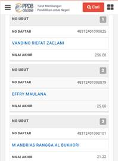 |
Jawab:
Prosedurnya
adalah:
1.
Dengan PC/laptop/HP yang terkoneksi internet, gunakan
Chrome/browser yang ada, masuk website https://ppdb.jatengprov.go.id/ lalu klik 'x' pada pemberitahuan
download template pakta integritas. Pada bagian PPDB SMK, klik tulisan �Sekolah
Menengah Kejuruan (SMK)�.� Klik pada
tulisan �Prestasi� atau �Afirmasi� sesuai jalur yang ditempuh.
|
|
|
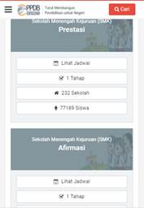 |
2.
Klik �Melakukan Aktivasi Akun� lalu klik �Login�. Kemudian
masukkan nomor peserta, password, dan kode keamanan dan klik tombol �Login�.
|
|
|
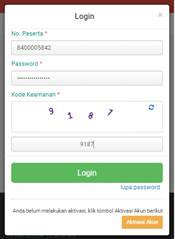 |

3.
Klik �Ubah Pilihan�. Klik �x� untuk menghapus pilihan SMK
dan kompetensi/jurusan yang ingin dihapus. Klik �Lanjutkan�
|
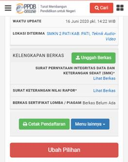 |
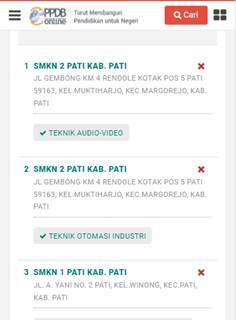 |
4.
Klik �Pilih/Tambah Sekolah�
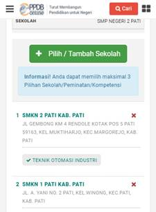
5.
Ketikkan �SMKN 2 Pati� atau SMK lain dalam daftar
pencarian, lalu klik �SMKN 2 Pati� atau nama SMK jika sudah ditemukan. Setelah
selesai, klik �Lanjutkan�.
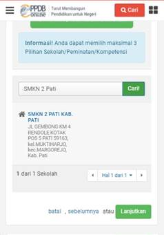
6.
Pilih kompetensi keahliah/jurusan yang ingin ditambahkan
dan klik simpan.
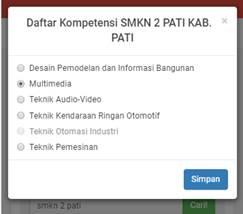
7.
Setelah yakin dengan perbaikan/ralat/revisi pilihan
jurusan 1, 2, dan 3, klik �Lanjutkan�.
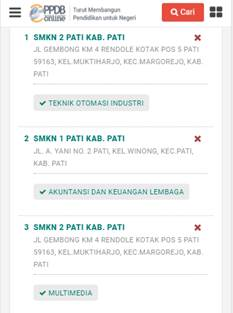
8.
Setelah yakin dengan pilihan, klik �Saya setuju dengan
pernyataan di atas� dan �Lanjutkan�. Klik �Cetak Bukti Pendaftaran�. Simpan
file bukti pendaftaran di HP/flashdisk.
|
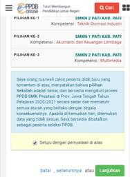 |
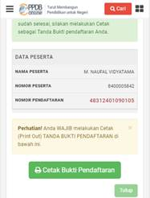 |
|
9.
Cetak/print bukti perbaikan/ralat/revisi pendaftaran
tersebut di tempat fotokopi atau warnet, lalu tanda tangani. Bukti pendaftaran
diperlukan untuk daftar ulang.
|
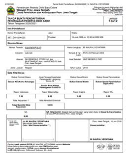 |
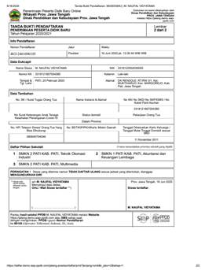 |
Bagaimana
cara pindah dari SMK ke SMA jika sudah terlanjur memilih jurusan/kompetensi di
SMK?
Jawab:
Prosedurnya
adalah:
Harus
membatalkan/mencabut dari jenjang SMK dulu, lalu buat ajuan akun baru lagi di
jenjang SMA.
Cara
membatalkan/mencabut dari jenjang SMK:
1.
Dengan PC/laptop/HP yang terkoneksi internet, gunakan
Chrome/browser yang ada, masuk website https://ppdb.jatengprov.go.id/ lalu klik 'x' pada pemberitahuan
download template pakta integritas. Pada bagian PPDB SMK, klik tulisan �Sekolah
Menengah Kejuruan (SMK)�.� Klik pada
tulisan �Prestasi� atau �Afirmasi� sesuai jalur yang ditempuh.
|
|
|
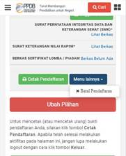 |
2.
Klik �Melakukan Aktivasi Akun� lalu klik �Login�. Kemudian
masukkan nomor peserta, password, dan kode keamanan dan klik tombol �Login�.
|
|
|
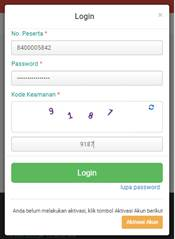 |

3.
Klik �Menu Lainnya� dan klik �Batalkan Pendaftaran� untuk
mengganti jenjang sekolah (SMK ke SMA atau sebaliknya). Masukkan �Password� dan
klik konfirmasi pembatalan setelahnya (klik �Ok�).
|
|
|
|

Bagaimana
cara mengecek di mana saya diterima?
Jawab:
Langkahnya sama seperti
pengecekan peringkat/ranking pendaftar.
Kapan
daftar ulang di SMKN 2 Pati?
Jawab:
Tanggal 1-8 Juli 2020
(info selanjutnya menyusul)
Apa saja
yang harus dipersiapkan dan dibawa saat daftar ulang?
Jawab:
Untuk semua pendaftar:
1.
Pakta Integritas dan Kesehatan (yang diberi materai dan
ditandatangani)
2. Bukti Pendaftaran
Asli (yang diprint dan ditandatangani)
3. Ijazah/Surat
Keterangan Lulus SMP/sederajat
4. Surat Keterangan
Nilai Rapor SMP/sederajat semester 1-5
5. Fotokopi Akte Kelahiran
(menunjukkan aslinya)
6. Fotokopi Kartu
Keluarga/KK (menunjukkan aslinya) atau Surat Keterangan Domisili (SKD) dari
instansi berwenang (RT/RW, Desa, atau Kantor Kependudukan dan Catatan Sipil)
Untuk
jalur prestasi:
Fotokopi
Piagam Prestasi (yang tertinggi yang dipunyai, menunjukkan aslinya) jika ada
Untuk
jalur afirmasi, membawa item berikut ini sesuai yang diisikan di website:
� Fotokopi Surat
Keterangan Anak Tenaga Kesehatan Penanganan Covid-19
� Fotokopi Kartu
KIP, PKH, atau Surat Keterangan lain dari Pemda (menunjukkan aslinya), atau
Surat Keterangan dari panti asuhan
Bagaimana
kriteria pendaftar yang langsung diterima melalui jalur prestasi?
Jawab:
Yang langsung diterima
untuk jalur prestasi:
Juara
1, 2, dan 3 tingkat internasional dan juara 1 tingkat nasional untuk kejuaraan
berjenjang dalam mata lomba yang ditentukan.
Apa saja
jenis lomba/kejuaraan yang diperhitungkan?
Jawab:
Jenis kejuaraan tingkat
nasional:
1) Olimpiade Sains
Nasional (OSN/KSN)
2) Olimpiade Olahraga
SiswaNasional (O2SN)
3) Festival dan Lomba
Seni Siswa Nasional (FLSN)
4) Gala Siswa Indonesia
5) Olimpiade Literasi
Siswa Nasional (OLSN)
6) Olimpiade Penelitian
Siswa Nasional (OPSI)
7) Lomba Cipta Seni
Pelajar Nasional
8) Kuis Ki Hajar
9) Pekan Olahraga Pelajar
Daerah (POPDA)
10) Pekan Olahraga
Pelajar Nasional (POPNAS)
11) Pekan Olahraga dan
Seni Antar Pondok Pesantren Daerah (POSPEDA)
12) Pekan Olahraga dan
Seni Antar Pondok Pesantren Nasional(POSPENAS)
13) Pekan Olahraga Daerah
(POPDA)
14) Pekan Olahraga
Provinsi (PORPROV)
15) Kejuaraan Nasional
Pra-PON
16) Pekan Olahraga
Nasional (PON)
17) Pekan Olahraga Paralimpik
Pelajar Daerah (PEPARPEDA)
18) Pekan Olahraga
Paralimpik Pelajar Nasional (PEPARPENAS)
19) Pekan Olahraga
Pelajar Daerah - Special Olimpic Indonesia (POPDA-SOINA)
20) Pekan Olahraga
Pelajar Nasional - Special Olimpic Indonesia (POPDA-SOINA)
21) Lomba Mata Pelajaran
Pendidikan Agama lslam dan Seni Islami(MAPST)
22) MTQ Pelajar
23) Kompetisi Sains
Madrasah (KSM)
24) Kompetisi Robotik
Madrasah
25) Pekan Keterampilan
dan Seni Pendidikan Agama Islam (PENTAS PAI)
26) Lomba Tingkat (LT)
Pramuka Penggalang
Jenis kejuaraan tingkat
internasional:
1) International
Mathematics and Science Olympiad (IMSO)
2) International Olympiad
In Informatics (IOI)
3) International
Teenagers Mathematics Olympiad (ITMO)
4) International Physics
Olympiad (IPhO)
5) International Chemistry
Olympiad (IChO)
6) International Biology
Olympiad (IBO)
7) International
Geography Olympiad (IGeO)
8) ASEAN Skill
Competition (ASC)
9) ASEAN School Games
10) International
Chemistry Olympiad (IChO)
11) International Biology
Olympiad (IBO)
12) International
Olympiad on Astronomy and Astrophysics (IOAA)
13) Intemational Olympiad
in Informatics (IOI)
14) The Asia Pasific
Informatic Olympiad (APIO)
Bagaimana
penghitungan Nilai Akhir (NA)?
Jawab:
NA = (Nilai Rapor x Nilai
Akreditasi) + Nilai Kejuaraan
Apakah
saya perlu melampirkan surat keterangan sehat dari dokter?
Jawab:
Tidak
wajib. Yang wajib adalah pakta integritas yang jadi satu dengan keterangan
sehat. Tapi jika ada, surat keterangan sehat dari dokter pemerintah
(Puskesmas/Pusdokkes/RS) bisa dilampirkan saat daftar ulang.
Bagaimana
jika saya belum cetak token saat ajuan akun?
Jawab:
Token
bisa dicetak ulang dengan cara:
1. Masuk https://www.ppdb.jatengprov.go.id
2. Klik tulisan
Sekolah Menengah Kejuruah
3. Klik 'Cetak ajuan
akun'
4. Masukkan NISN,
tanggal lahir, kode keamanan.
Bagaimana
jika KK atau NIK saya dinyatakan belum tinggal selama setahun atau lebih di
Jawa Tengah?
Jawab:
Jawab:
Kemungkinan
pendaftar memilih 'Sesuai KK dalam Provinsi Jateng' saat ajuan akun.
Cara
perbaikannya (belum dicoba)
1.
Minta Surat Keterangan Domisili (SKD) dari RT/RW setempat, menerangkan bahwa
pendaftar sudah tinggal selama lebih dari 1 tahun di Jawa Tengah.
2.
Ajuan akun lagi, dengan memilih pilihan domisili 'Sesuai Surat Keterangan
Domisili'
Jawab:
1.
Batalkan aktivasi/pendaftaran
2.
Logout (klik �Keluar�)
3.
Ajuan akun lagi dan edit data yang ingin diubah/diganti dan cetak bukti ajuan
akun (ada nomor peserta dan token)
4.
Aktivasi akun lagi dan cetak bukti pendaftaran yang baru (ada nomor peserta dan
pilihan jurusan)
Bagaimana
cara membatalkan pendaftaran?
Jawab:
Cara
membatalkan/mencabut dari jenjang SMK:
1.
Dengan PC/laptop/HP yang terkoneksi internet, gunakan
Chrome/browser yang ada, masuk website https://ppdb.jatengprov.go.id/ lalu klik 'x' pada pemberitahuan
download template pakta integritas. Pada bagian PPDB SMK, klik tulisan �Sekolah
Menengah Kejuruan (SMK)�.� Klik pada
tulisan �Prestasi� atau �Afirmasi� sesuai jalur yang ditempuh.
|
|
|
|

2.
Klik �Melakukan Aktivasi Akun� lalu klik �Login�. Kemudian
masukkan nomor peserta, password, dan kode keamanan dan klik tombol �Login�.
|
|
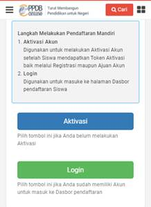 |
|
3.
Klik �Menu Lainnya� dan klik �Batalkan Pendaftaran�.
Masukkan �Password� dan klik konfirmasi pembatalan setelahnya (klik �Ok�).
|
|
|
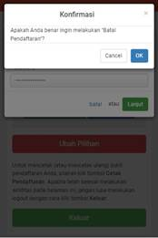 |